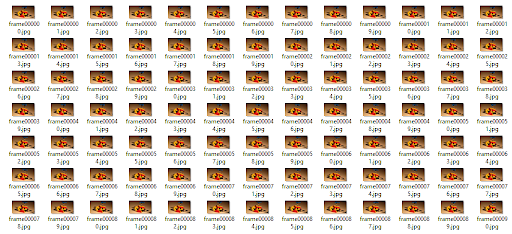
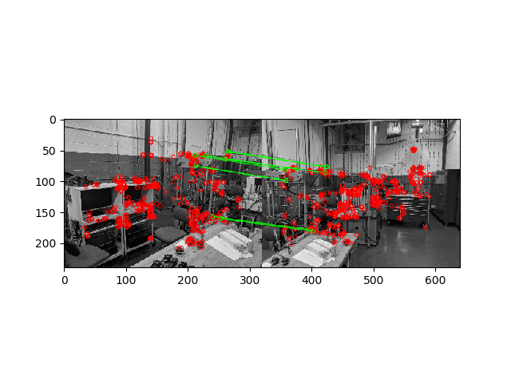

CS 4476 - Mid-term Update
Team members
William Chen (wchen407), Nathan Lai (nlai8), Marcus Loo (mloo3), Gabor Siffel (gsiffel3)
Abstract
Shaky videos have been a problem since the video camera has been created, making it hard to understand what is going on in the video. The approach we took for our mid-term update involves implementing our feature detection for the image and creating our frame-to-frame transformations in order to overlap the features detected in our first frame to where they are in our second frame. The main result we have obtained is a list of all the frame-to-frame transformations.
Teaser Figure

Introduction
Shaky videos have been a problem since the video camera has been created. Shaky videos make it hard to understand what is going on in the video. However, if you were able to reduce the "shake" in a video, it would greatly increase the clarity of the video. Above, the gif would be hard to understand if there was no image stabilization. We plan to make an application that allows a user to upload their video file to the website. A new video file will then be created, which will be a stabilized version of the original video file. Currently, we are officially supporting mp4. We plan on testing with other video formats later on. Based on our research, our pipeline seems to be unique, but the way that we are solving each part of the pipeline, for instance feature detection, is not unique - we are using the ORB feature detector.
Approach
- Separate the video into separate frames. We used opencv to be able to modify the video.
- All frames are converted into grayscale and the ORB feature detector, which is a more efficient alternative to SIFT, which is an algorithm that was originally going to be used, is initiated and the matches between the two adjacent images were found. Using the Flann based matcher, the detected features between the two images were compared. From there, a ratio proposed by D. Lowe was used to determine how good the found matches were [ref]. Figure 1 shows the detected points shown in red and a green line is drawn between matched features. The filtered points are then translated using homography.
Experiments and Results and Qualitative Results
We wrote code to separate an mp4 video into its frames. We do this using OpenCV’s Python library in order to be able to find common features between sequential frames.
To test out how well the ORB detector and the Flann feature matcher works, a test image was plotted. Figure 1 shows the detected points shown in red and a green line is drawn between matched features. The matched features qualitatively looks accurate. The sharp points on the columns as well as the tables and bolts were detected and matched. The matched points’ coordinates were also printed. There were supposedly nine matched points, which should be enough for transformation.
To test the image stabilization, we wrote a “version 1” of our code that collected these pairs of points for every pair of sequential frames in the video. Then, using these points, we calculate the average relative position/offset of each frame. Using this offset information, we then build the frames together to form a larger, scrolling frame that attempts to remain stable relative to the main image features.
Conclusion and Future Work
The current work has successfully divided the input videos into image files. Using that we can easily detect and match features sequentially. Based on the results thus far, the ORB detector and Flann matcher work decently well in terms of images that have not shifted too far away from each other. The object detection works great and the detected points will then be transformed.
We want to finish the main components of our project. This will include finishing implementing the transformation of adjacents as well as averaging transformations to create a smoother video. Once the basic structure of our project is complete, we want to explore different algorithms of image feature detection. We also want to try several different techniques for stabilizing the frames. It would also be nice if we set up a database in the backend so our website can function as the front-end for our tool.
References
https://gitlab.com/juergens/stabbot
A reddit bot that stabilizes gifs. They explained in their approach how averaging the transformations helped improve transformations moving out of view. This idea would be useful in our implemenation.
https://www.mathworks.com/help/vision/examples/video-stabilization-using-point-feature-matching.html
Example of stabilizing a video in Matlab. Looking at how they determined similar points between frames seems useful.
https://opencv-python-tutroals.readthedocs.io/en/latest/py_tutorials/py_feature2d/py_orb/py_orb.html
Theory and Basics of ORB (Oriented FAST and Rotated Brief) in OpenCV